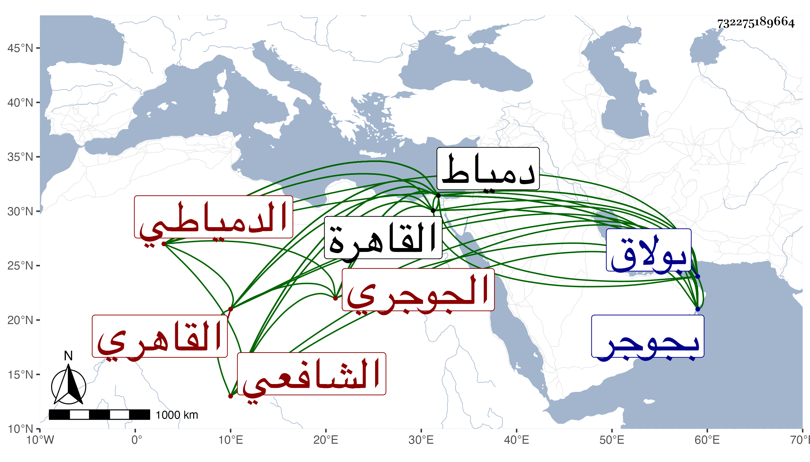

0902Sakhawi.DawLamic.ITO20230111-ara1.EIS1600.732275189664
Biography ID: 732275189664
880
علي بن علي بن محمد بن أحمد بن الحاج نصر العلاء أو النور بن النور ابن الفقيه ناصر الدين وقد يختصر فيقال ناصر الجوجري ثم الدمياطي القاهري الشافعي ويعرف بالحصري وبابن ناصر . ولد في رجب سنة تسع أو عشر وثمانمائة بجوجر ونشأ بها فقرأ القرآن عند النور الشامي الضرير وصلى به ثم تحول منها إلى القاهرة في حدود سنة ست وعشرين فقرأ في المنهاج وغيره . علي النور المناوي الماضي وفي الملحة علي الشهاب الأبشيطي وانتقل لدمياط في سنة ثمان وعشرين فحفظ بها شذور الذهب لابن هشام وربع العبادات من المنهاج والملحة وبحثها ما عدا المنهاج على ناصر الدين محمد بن سويدان وكذا بحث عليه عروض التبريزي وأخذ أيضا في الفقه والعربية وغيرهما عن الشمس محمد بن الفقيه حسن البدراني وقطنها وكذا بولاق من القاهرة مرة وتكسب في كل منهما بالشهادة وكذا بصنعة الحصر في دمياط واعتنى بنظم الشعر والفنون ففاق ونظمه في الفنون أحسن وكتب عنه منه ابن فهد والبقاعي في دمياط سنة ثمان وثلاثين ومما كتباه قوله :
| بروحي أفدي من أحب ومالي | فما لعذولى في الغرام ومالي |
| أيجمل بي صبر وبالي لنحو من | به ذقت في أمر الغرام وبالي |
إلى آخرها وكذا كتبت عنه بدمياط في القدمة الأولى قوله :
| ثلاثين يوما بت أرقب وعده | وعشر ليال والفؤاد كليم |
| فقولوا لرب الحسن في طول وصله | يكلمني إني لديه كليم |
وغير ذلك مما كتبته في الرحلة وغيرها . مات ...
